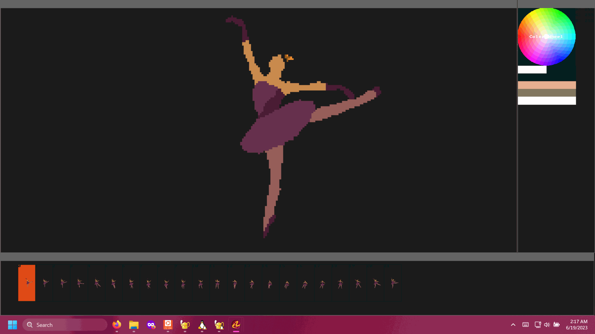
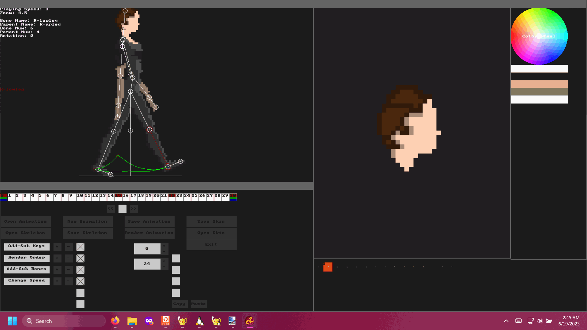

Easy Rotoscope
Easy Rotoscope is an animation tool for rotoscoping over other applications.
Rotoscoping is generally a very tedious task and the lack of decent software makes it even more so.
This application can help accelerate the process and while it's still very much a work in progress, it already supports many unique and advanced features.
It supports window capture to provide a tracing canvas from any application running on your desktop.
In the case of this being your browser, it can integrate with YouTube to provide frame skipping controls without switching applications.
It has unlimited undo/redo history.
An array of painting tools including a pencil, brush, eraser, fill (local and global), circle, box, and line tool.
It supports selecting via circle, box, magic wand (local and global).
The paint canvas supports multiple layers, and animation frames.
Selections can be moved, copied and pasted across frames and layers.
The program supports onion skinning to assist with hand draw animating.
The input managment captures every reported input to increase smoothness and responsiveness of pen strokes or mouse movement.
The program is configured to function regardless of windows ink enabled, but it's reccommended to disable windows ink if you experience issues.
It has a basic framework for skeletal animation that supports length, rotation and position keying.
It can render bone path previews (keyframes visualized in color) to accelerate animation workflow.
Images that are bound to bones can be individually rotoscoped in the painting editor.
The skeletal animation editor also provides access to the window capture for animation reference.
This program makes use of the Windows API for some functionality and is not cross-platform due to this.
Example Animations
Screenshots
 